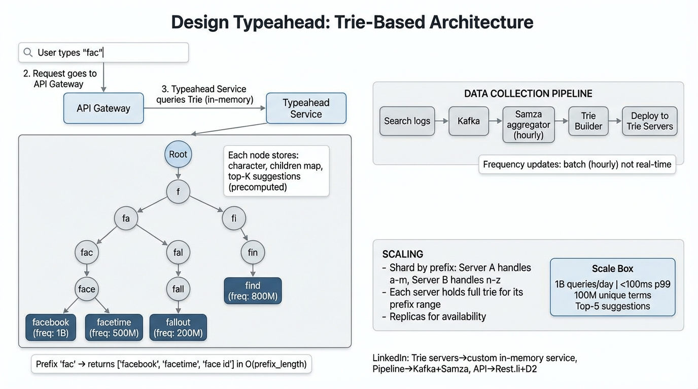

A deep dive into autocomplete and search suggestion systems — trie data structures, real-time data pipelines, prefix sharding, and sub-100ms latency at billion-query scale.
A typeahead (autocomplete) system provides real-time search suggestions as the user types. Every keystroke triggers a prefix lookup that must return the most relevant completions within a strict latency budget. The system bridges two worlds: an offline pipeline that builds the suggestion index from search logs, and an online serving layer that resolves prefix queries in single-digit milliseconds.
| Metric | Value | Derivation |
|---|---|---|
| QPS (avg) | ~11,500 | 1B / 86,400s |
| QPS (peak 3×) | ~35,000 | Peak traffic multiplier |
| Average query length | 4 chars | Each search → ~4 prefix lookups |
| Prefix QPS (peak) | ~140,000 | 35K × 4 chars |
| Trie memory (100M terms, 15 chars avg) | ~10–15 GB | Compressed trie in RAM |
A trie (prefix tree) is a tree where each node represents a single character. Traversing from root to any node spells out a prefix. Words are marked at terminal nodes. This structure enables prefix lookup in O(L) time where L is the prefix length — independent of the total number of stored terms.
class TrieNode:
char: str # character at this node
children: dict[str, TrieNode] # up to 26+ children
is_terminal: bool # marks end of a valid term
top_k: list[tuple[str, int]] # precomputed top-K completions with scores
Each node stores the character it represents, pointers to child nodes, a terminal flag, and — crucially — a precomputed list of top-K completions reachable from that node.
The naive approach traverses the entire subtree at query time to find the highest-frequency completions. With 100M terms this is far too slow. Instead, during the offline build phase, we propagate the top-K results upward from leaf to root:
| Approach | Query Complexity | Build Complexity | Space Overhead |
|---|---|---|---|
| Naive DFS at query time | O(subtree size) | O(N) | None |
| Precomputed top-K | O(prefix_len) | O(N × K) | K entries per node |
f → traverse root → f node → return f.top_k: [facebook, food, finance, funny, flights]a → traverse f → a node → return fa.top_k: [facebook, fashion, family, fast food, favorite]
top_k list in <5ms.Raw search queries are logged with timestamps and anonymized user IDs. These logs flow through a multi-stage pipeline that converts noisy raw data into a clean frequency table suitable for trie construction.
Search Logs → Kafka Topic (raw-queries)
→ Samza Job: deduplicate, lowercase, strip special chars
→ Samza Job: hourly frequency aggregation
→ Frequency Table (term → weighted_count)
→ Trie Builder
→ Deploy to Trie Servers
Frequencies use exponential time decay so stale queries lose weight over time. The formula for a query’s effective score is:
score(term) = ∑ count_i × e^(-λ × age_hours_i) where: count_i = occurrences in time bucket i age_hours_i = hours since bucket i λ = decay constant (e.g., 0.01 → half-life ~70 hours)
This ensures that a query searched 10,000 times last month but rarely today scores lower than a query searched 500 times in the last hour.
Sudden spikes (breaking news, viral events) need to surface immediately, not wait for the hourly rebuild. A trending detector runs alongside the main pipeline:
| Step | Detail |
|---|---|
| Sliding window | Count queries in 5-minute sliding windows |
| Z-score anomaly | Flag terms where current rate exceeds historical mean + 3σ |
| Hot-patch trie | Inject trending terms into a small overlay trie that is checked before the main trie |
| Merge on next rebuild | Trending terms get folded into the main trie on the next hourly build |
A single trie with 100M terms fits in ~10–15 GB of RAM, which is feasible on a single machine. However, at 140K peak QPS a single node can’t handle the throughput. The solution is to shard by prefix range:
| Shard | Prefix Range | % of Terms (approx) |
|---|---|---|
| Shard 0 | a–d | ~25% |
| Shard 1 | e–k | ~25% |
| Shard 2 | l–r | ~25% |
| Shard 3 | s–z, 0–9 | ~25% |
Shard boundaries are tuned based on actual query distribution, not uniform alphabet splits. Hot prefixes (e.g., "s", "c") may get their own shard.
The API gateway uses a prefix routing table to direct each query to the correct shard in O(1). The routing table is small (a few hundred entries) and cached in every gateway instance.
Much of the latency and QPS reduction happens on the client, not the server:
Don’t send a request on every keystroke. Wait 100–300ms after the user stops typing. Fast typists entering "facebook" (8 chars in ~600ms) trigger only 2–3 requests instead of 8.
Cache recent prefix → results mappings in localStorage or an in-memory LRU. If the user types "face", deletes to "fac", then retypes "face", the second "face" lookup is instant.
When a new keystroke arrives before the previous response, cancel the in-flight request using AbortController. Reduces wasted server work by ~40%.
After receiving results for "fac", the client can optimistically request "face" if the user’s typing speed suggests they will continue. Hides network latency behind typing time.
| Component | Time | Notes |
|---|---|---|
| Client debounce | 100–300ms | Configurable; reduces QPS 3–5× |
| Network RTT | 5–30ms | Edge PoP or regional DC |
| Gateway routing | <1ms | O(1) prefix table lookup |
| Trie lookup | <1ms | In-memory, O(prefix_len) |
| Serialization + response | 1–2ms | JSON/protobuf top-5 list |
| Total server-side | <5ms | Well within 100ms p99 budget |
Global suggestions work for most users, but personalized suggestions improve relevance significantly. The approach is a two-tier merge:
| Tier | Source | Latency Impact |
|---|---|---|
| Global top-K | Main trie (precomputed) | None (<1ms) |
| Personal top-K | User’s recent search history (small per-user trie or hash map) | +1–2ms (Redis/Venice lookup) |
The serving layer merges global and personal results, de-duplicates, and re-ranks. Personal results get a scoring boost (e.g., 2× weight) so the user’s own past queries appear first.
| Concern | Approach |
|---|---|
| Offensive / harmful queries | Blocklist filter applied during trie build and as a runtime check |
| Multi-language support | Separate trie per language; language detected from user locale or first character (CJK vs Latin) |
| Spell correction | Not in typeahead path (too slow). Handled by a separate fuzzy-match service post-search. |
| Phrase suggestions | Treat multi-word queries as single terms; space is just another character in the trie |
| System Design Component | LinkedIn Equivalent | |
|---|---|---|
| Trie Serving Layer | Custom in-memory service (Galene typeahead) | Search Infra |
| Data Pipeline (aggregation) | Kafka + Samza streaming jobs | Kafka Samza |
| Serving / Read Store | Venice (derived data store) | Venice |
| API Layer | Rest.li with D2 service discovery | Rest.li D2 |
| Personalization Store | Venice (per-user features) or Espresso | Venice Espresso |
| Trending Detection | Samza windowed aggregation + UMP signals | Samza UMP |
| Blocklist / Content Safety | Pembe (content moderation platform) | Trust & Safety |
| # | Question | Key Points |
|---|---|---|
| 1 | How do you handle a term that goes viral in 5 minutes? | Overlay trie with trending detection; sliding window z-score anomaly; hot-patch without full rebuild. |
| 2 | Why not use Elasticsearch for typeahead? | ES completion suggesters use FSTs internally (similar to tries). Viable but adds operational overhead. Custom trie gives full control over memory layout and latency. |
| 3 | How do you shard when one prefix is extremely hot? | Dynamic re-sharding: split the hot prefix into sub-ranges (e.g., "s" → "sa-sm", "sn-sz"). Monitor QPS per shard and rebalance. |
| 4 | How do you prevent offensive suggestions? | Blocklist filter at build time + runtime. Human-curated list + ML classifier for new terms. Fail-closed: if uncertain, don’t suggest. |
| 5 | How does personalization work without adding latency? | Per-user data in Venice (single-digit ms reads). Merge with global results at serving time. Cache personal results for repeat queries. |
| 6 | What happens if the trie build fails? | Blue-green deploy: old trie stays live. Build failures trigger alerts; system degrades gracefully to stale-but-valid suggestions. |
| 7 | How do you support multi-language typeahead? | Separate trie per language family. Language detection from user profile or Unicode range of first character. CJK needs n-gram segmentation, not character-level trie. |
| 8 | How would you add fuzzy matching (typo tolerance)? | Not in the hot path. Use edit-distance on the final result set, or a separate BK-tree / SymSpell index queried in parallel with a timeout. |